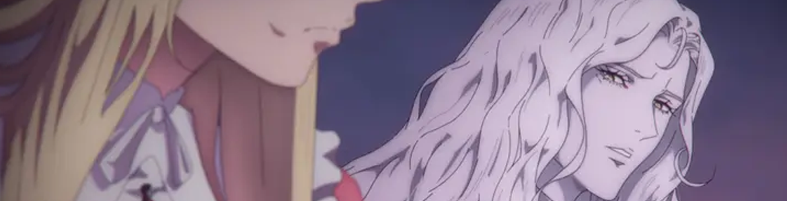

I Miss Castlevania So Much
.png)
• Published 22/02/2025
Vampires are everywhere. Everyone loves vampires, you probably, at least, like vampires. Some vampires, however, are better than other vampires. Count Orlok is a Dracula knock-off, Dracula beats Edward Cullen by the longest shot ever, and Alucard is better than Dracula. Speaking of Alucard, I miss Castlevania.
I deeply missed my anti-Dracula and anti-Erzesbet idiots, so I made the bold decision to get one of the Castlevania games on my 2DS (pirated). It was a very bad idea. I am awful at it. So I’m going to do myself a favour and let that endeavour take a backseat, and talk about the animated series instead.
Now, being completely honest, even though both of these shows have very, very good reviews, I was pretty hesitant to start Castlevania, mostly because I didn’t really know what it was, but I figured if my very specific best friend liked it, I probably would too. I did like it, and now I sit on the edge of my bed several times a month thinking about baby Alucard. And now, humour me while I talk mostly about Alucard.

First of all, Alucard looked adorable as a baby. I don’t like babies, they’re grimy and loud and, unfortunately, can’t do anything. Baby Alucard does not fit into any of the above criteria. He’s just a sweet angel from the heavens above with the cutest fangs ever. My maternal instincts would not kick in if someone gave him to me, because I have none, but I would at least stare at him in horror and abject disgust, because he’s just a little thing with fangs and the most adorable smile.
Second. Alucard in Castlevania. His outfit fucks. Or his lack of outfit, he’s shirtless like, a lot. I’m not complaining, just commenting. This was probably the best way to introduce the “vampire messiah” who’s really just Dracula’s son, he was just taking a long nap because he was really sleepy. Once he gets woken up by Trevor Belmont, you quickly discover that he’s just an angsty teen. We’re technically supposed to be the same age. Someone lied to me several times. He doesn’t even look 18 in Nocturne. Speaking of Nocturne, WOW. I loved Nocturne, and obviously my favourite part was that Alucard looked great. Outfit? Amazing? Hair? Immaculate. Face? Enough beauty to fuel a country’s economy. Imagine looking great, even after getting dropped into a nasty French lake and getting your nervous system rewired by 2 weird animorph lesbian vampires. Couldn’t be me.
Do you like vampires? Watch Castlevania. Do you like amazing animation? Watch Castlevania. Do you like tiny baby vampires? Watch Castlevania.
- Where to watch
-
 Netflix (Castlevania)
Netflix (Castlevania)
-
Netflix (Castlevania: Nocturne)